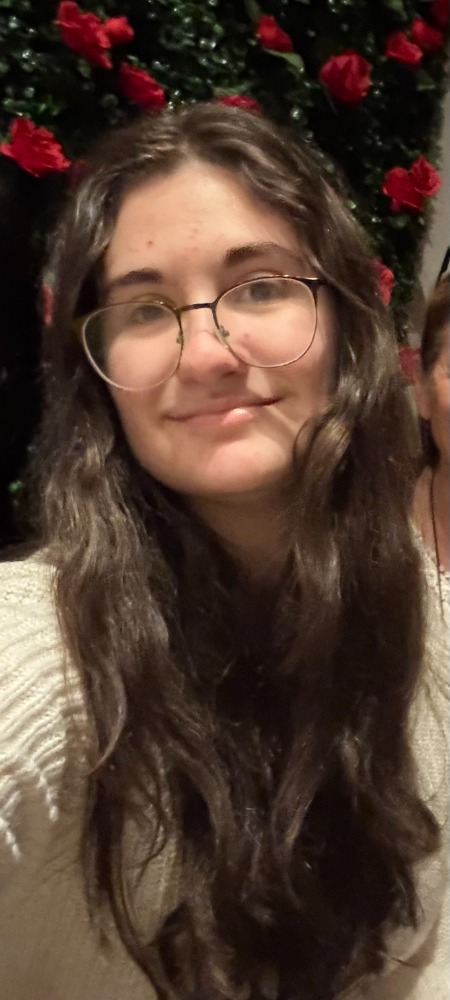

About me!
Hello! My name is Kaitlyn Gray. I am currently studying Game Design and Development at Rochester
Institute of Technology with an emphasis in
coding and development in a team environment.
As a game developer, I gained experience with
project management over the summer by building a game that focuses on tackling self-doubt.
After graduation, my goal is to find a game development role where I can work on creating games for people to enjoy.
I have a lifelong passion for gaming, and it is the primary reason why I have decided to pursue game development.